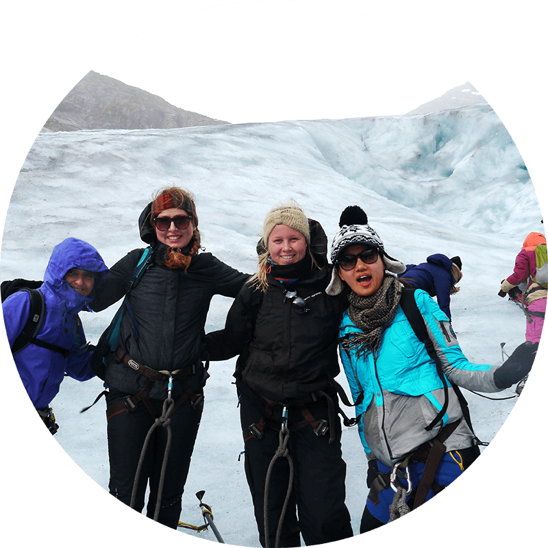
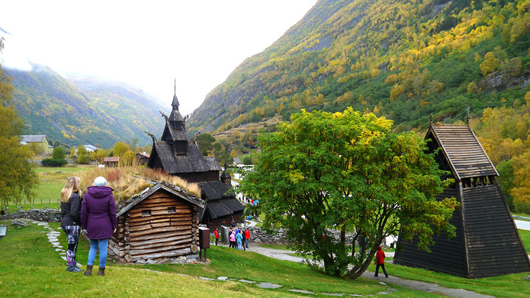

Fjord Adventure 2015
October 2nd - 4th
Student trip with ESN Bergen
Glacier Hike
Duration of the hike is about 4-5 hours, of which 2 hours we walk on the ice with safety equipment. During the hike, you will experience the most spectacular sceneries at the lower part of the Nigard Glacier.

Sogn Fjord Cruise
Boarding a boat at the Gudvagen for a 2 hour cruise on the Sognefjord. A narrow part of the fjord is called Nærøyfjord and is protected by UNESCO.

Borgund Stave Church
Borgund Stave church is the best preserved stave church, dating back to 1180. It was built using 2000 pieces of logs and planks, and although it is no longer used regularly for church functions, it is now used as a museum.
